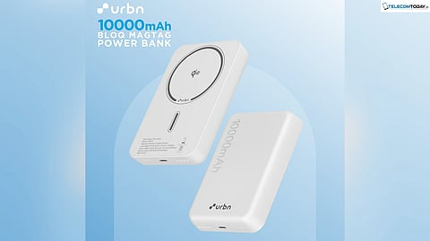
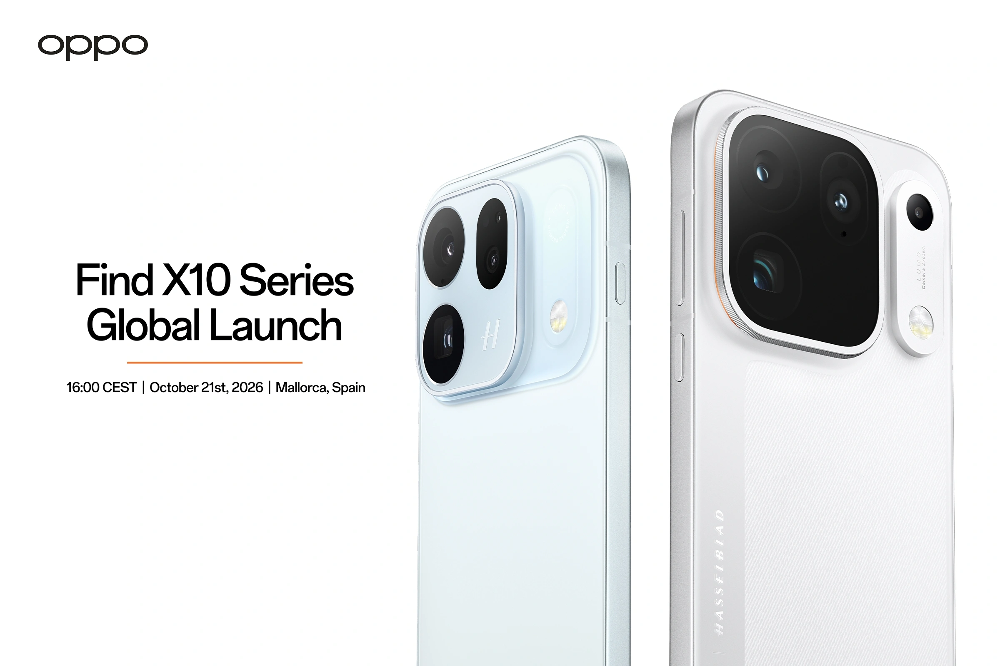
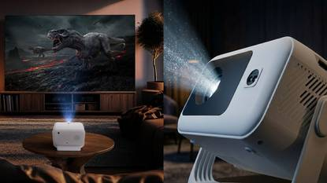

3 Gadgets to Know About in October 2026
Looking for new gadgets? Here are three products to research before buying. Specifications, availability and prices can vary by model and seller, so verify the current listing.
Affiliate disclosure: Websitewire may earn a commission from qualifying purchases through Amazon links.
1. URBN Bloq Magtag Power Bank

- 10,000mAh battery capacity
- Up to 15W Qi2 wireless charging, if supported by the phone and model
- Up to 20W USB-C wired charging
- Magnetic attachment for compatible devices
Check the exact model, supported charging standards and current price before ordering.
2. OPPO Find X10 Series

OPPO's Find X series targets users interested in premium smartphone cameras and performance. Confirm the official India launch, exact model and specifications before purchase.
- Camera features depend on the model
- Compare processor and storage options
- Check battery, charging and software support
3. JUST CORSECA Smart Projector

- Designed for home entertainment
- Compare native resolution and brightness
- Check HDMI, USB and wireless connectivity
- Verify streaming-app support and warranty
Check the exact projector model and current price before buying.
Which Gadget Is Right for You?
A power bank may help with everyday charging and travel. A premium phone may suit users comparing camera performance, while a projector can be useful for home entertainment. Compare verified specifications, seller ratings, warranty and return terms.
Frequently Asked Questions
Are the prices fixed?
No. Prices and availability change, so check the seller's latest listing.
Are these direct product links?
These are Amazon search links with the Websitewire Associates tag, not confirmed individual product listings.
What should I check before buying?
Confirm the exact model, compatibility, warranty, seller and return policy.